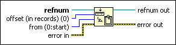

Set Datalog Position Function
Owning Palette: Datalog Functions
Requires: Base Development System
Moves the current datalog position of the file identified by refnum to the datalog position indicated by offset (in records) according to the mode in from.
The Write Datalog function changes the current datalog position to the end of the file. You cannot use this function to write to a different position in the file.

 Add to the block diagram Add to the block diagram |
 Find on the palette Find on the palette |